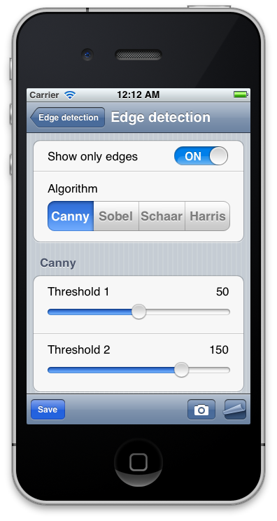

 Hello readers! The fifth part of the OpenCV Tutorial is here! In this post we will add options pane for our samples. In the end of this chapter our application will receive options interface as shown on screenshot. But first, let me remind you (if you came here for the first time) what is happening here. The “OpenCV Tutorial” is a open-source project maintained by me (Eugene Khvedchenya). My goal - create a iPhone/iPad application to demonstrate various image processing algorithms of OpenCV library and how to use them in iOS applications. Please check previous parts if you haven’t done this yet:
- Part 1 - Introduction
- Part 2 - Writing a base UI
- Part 3 - Video and image processing
- Part 4 - Correction of mistakes Also, there is great OpenCV Tutorial roadmap. I’m trying to follow it. As usually, all source code can be found on a GitHub: OpenCV Tutorial.
Sample options
To expose algorithm options to user code we add a bunch of “registerOption” functions that allows to register properties. Registered properties can be changed in future using user interface. Our application will support four property types: boolean, integer, float and string enum types.
- Boolean - this option can be used as a switch to enable or disable particular sample features.
- Integer - this option allows adjust any kind of thresholds of integer type.
- Float - this option allows adjust any kind of thresholds of real type.
- String enum - this option is ideal choice if you want to select one of available options.
Let’s take a look to SampleBase::registerOption functions. Each overload allows to register option of each supported property type. Overloaded functions of Integer and Float types also allows you to specify minimum and maximum allowed values. Each option has it’s unique name, section that allows to group options to logical sections and pointer to property value.
//! Base class for all samples
class SampleBase
{
public:
...
const OptionsMap& getOptions() const;
protected:
void registerOption(std::string name, std::string section, bool * value);
void registerOption(std::string name, std::string section, int * value, int min, int max);
void registerOption(std::string name, std::string section, float * value, float min, float max);
void registerOption(std::string name, std::string section, std::string* value, std::vector stringEnums, int defaultValue = 0);
private:
OptionsMap m_optionsWithSections;
};
Typical use of these functions is shown in EdgeDetectionSample constructor. This this method we register available edge detection algorithm (String Enum), algorithm parameters (Integer and Real types), a switch to control how the output image looks - edges only or blended one (Boolean).
EdgeDetectionSample::EdgeDetectionSample()
: m_showOnlyEdges(true)
, m_algorithmName("Canny")
, m_cannyLoThreshold(50)
, m_cannyHiThreshold(150)
, m_harrisBlockSize(2)
, m_harrisapertureSize(3)
, m_harrisK(0.04f)
, m_harrisThreshold(200)
{
std::vector algos;
algos.push_back("Canny");
algos.push_back("Sobel");
algos.push_back("Schaar");
registerOption("Algorithm", "", &m;_algorithmName, algos);
registerOption("Show only edges", "", &m;_showOnlyEdges);
// Canny detector options
registerOption("Threshold 1", "Canny", &m;_cannyLoThreshold, 0, 100);
registerOption("Threshold 2", "Canny", &m;_cannyHiThreshold, 0, 200);
}
All properties are stored in the m_optionsWithSections class field. There is a potential memory leak, because options are not deleted, but since each sample is created only once and deleted only when application exits we leave this as is. To access registered properties we expose public function getOptions().
Presenting options in UI
To present registered options we will use UITableView class, where each table row corresponds to single option. Filling table view with dynamic data a little bit tricky. We have to complete few steps:
- Implement UITableViewDelegate and UITableViewDataSource interfaces and connect them to our table. The first protocol provides a data four out table from the registered options. The second protocol modifies default table behavior as we wants to.
- For each property type we have to create a custom cell view that allows modifying underlying value. During data binding we will be responsible to create a view that corresponds to property type.
- When the property is changed from the user interface we have to inform our view controller about this via callback.
Let’s start from creating a custom cells.
OptionCell
Each cell has a notification delegate used to inform a user code when algorithm property has been changed. Also there will be a readonly property cellHeight that define a designed cell height:
@protocol OptionCellDelegate
- (void) optionDidChanged:(SampleOption*) option;
@end
@interface OptionCell : UITableViewCell
@property (readonly) float cellHeight;
@property id delegate;
@end
To create a custom cell we subclass from OptionCell type and add corresponding XIB file that contains it’s interface. We also assigne the reusable identifier for each cell type. Quote from UITableView Class Reference: